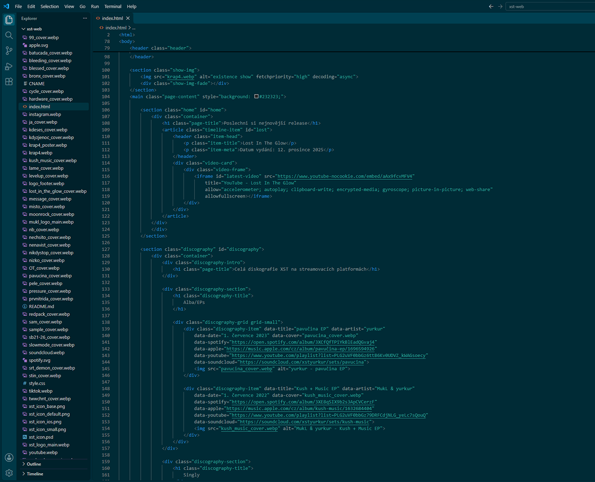

No overwhelming walls
of text. No dull looks.
Vibrant and responsive.
The websites I build are clean and uncluttered, but they still pop. Everybody hates confusing layers of menus and unclear navigation. My websites make it easy to get where you wantto go.
I use AI to generate code, but not to create images or logos. Don’t expect generic, auto-gen slop. I go through the code and make adjustments by hand. All visual assets are my own work, too.

If you like what you see here and need a website of your own, feel free to contact me via Instagram or email.
Here’s my portfolio: